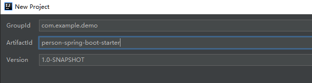
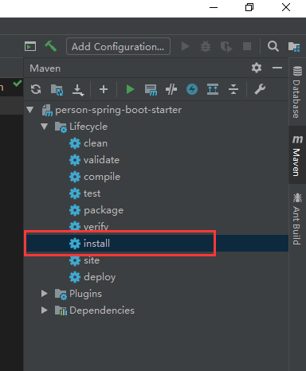

原文连接:https://www.cnblogs.com/lookings/p/11770293.html
一、前言
到现在，我们可以看出来，如果我们想用一些功能，基本上都是通过添加spring-boot-starter的方式来使用的，因为各种各样的功能都被封装成了starter，然后把相关服务注入到容器中去，那么如果我们想用一下自己的某些功能呢，那就也要编写一个自定义的starter，所以今天我们就来看看，怎么编写自己的starter，来实现在springboot中实现自己想要的一些功能。
二、原理
回想一下， 当我们使用一个官方的starter的时候，只需要将相应的starter依赖包添加到pom.xml中去就可以了，然后maven自动下载依赖包，并且springboot在启动后会自动配置相关的服务，然后注入的到容器中去。那么springboot是如何知道要去调用哪些方法，加载哪些配置，并注入哪些bean呢？
基本步骤如下：
1.首先，springboot在启动的时候会去找starter包下resources/META-INF/spring.factories文件，然后根据文件中配置的自动配置类运行，加载autoconfigure类。
2.根据@Conditional注解的条件，决定Bean是否要注入的容器中去。
3.然后我们一般用的就是这个Bean，来使用其中的一些功能。
三、编写自己的Starter
3.1 创建maven项目
首先我们创建一个maven项目，按照如下名字起名，其实starter说白了也只是一个jar：

一般的，官方的starter命名方式是spring-boot-start-xxx的形式，为了区分，我们自定义的starter用xxx-spring-boot-starter的命名方式。
1.添加springboot的依赖，因为要成为一个spring-boot-starter是需要依赖springboot的这套流程的，所以我们引入以下依赖：
1 <project xmlns="http://maven.apache.org/POM/4.0.0"
2 xmlns:xsi="http://www.w3.org/2001/XMLSchema-instance"
3 xsi:schemaLocation="http://maven.apache.org/POM/4.0.0 http://maven.apache.org/xsd/maven-4.0.0.xsd">
4 <modelVersion>4.0.0</modelVersion>
5
6 <groupId>com.example.demo</groupId>
7 <artifactId>person-spring-boot-starter</artifactId>
8 <version>1.0-SNAPSHOT</version>
9 <packaging>jar</packaging>
10
11 <dependencies>
12 <dependency>
13 <groupId>org.springframework.boot</groupId>
14 <artifactId>spring-boot-autoconfigure</artifactId>
15 <version>2.0.0.RELEASE</version>
16 </dependency>
17 <dependency>
18 <groupId>org.springframework.boot</groupId>
19 <artifactId>spring-boot-configuration-processor</artifactId>
20 <version>2.0.0.RELEASE</version>
21 <optional>true</optional>
22 </dependency>
23 </dependencies>
24
25 </project>2.添加配置类PersonProperties，主要来从配置文件中读取配置绑定到这个类上：
1 package com.example.demo;
2
3 import org.springframework.boot.context.properties.ConfigurationProperties;
4
5 @ConfigurationProperties(prefix = "spring.person")
6 public class PersonProperties {
7 private String name;
8
9 private Integer age;
10
11 public String getName() {
12 return name;
13 }
14
15 public void setName(String name) {
16 this.name = name;
17 }
18
19 public Integer getAge() {
20 return age;
21 }
22
23 public void setAge(Integer age) {
24 this.age = age;
25 }
26 }3.添加我们的核心服务类，这里边是我们主要提供的功能，假设我们提供了一个sayHello方法，返回一段话：
1 package com.example.demo;
2
3 public class PersonService {
4 private PersonProperties personProperties;
5
6 public PersonService(PersonProperties personProperties) {
7 this.personProperties = personProperties;
8 }
9 public String sayHello() {
10 return "大家好，我叫: " + personProperties.getName() + ", 今年" + personProperties.getAge() + "岁";
11 }
12 }4.添加自动配置类，这个类主要是给springboot来用的，springboot会用这个类来启动，激活我们的服务，注册都容器中去：
1 @Configuration
2 @EnableConfigurationProperties(PersonProperties.class)
3 @ConditionalOnClass(PersonService.class)
4 @ConditionalOnProperty(prefix = "spring.person", value = "enabled", matchIfMissing = true)
5 public class PersonServiceAutoConfiguration {
6 @Autowired
7 private PersonProperties personProperties;
8
9 @Bean
10 public PersonService personService(){
11 return new PersonService(personProperties);
12 }
13 }解释一下代码中用到的几个注解：
- @ConditionalOnClass，当classpath下发现该类的情况下进行自动配置。
- @ConditionalOnMissingBean，当Spring Context中不存在该Bean时。
- @ConditionalOnProperty(prefix = "srping.person",value = "enabled",havingValue = "true")，当配置文件中spring.perons.enabled=true时。如果没有，使用matchIfMissing的值，也为true。
- @Bean，把返回的PersonService对象添加的spring容器中去，这样我们再使用的使用就可以直接装配了。
其他注解：
- @ConditionalOnBean:当容器中有指定的Bean的条件下
- @ConditionalOnClass：当类路径下有指定的类的条件下
- @ConditionalOnExpression:基于SpEL表达式作为判断条件
- @ConditionalOnJava:基于JVM版本作为判断条件
- @ConditionalOnJndi:在JNDI存在的条件下查找指定的位置
- @ConditionalOnMissingBean:当容器中没有指定Bean的情况下
- @ConditionalOnMissingClass:当类路径下没有指定的类的条件下
- @ConditionalOnNotWebApplication:当前项目不是Web项目的条件下
- @ConditionalOnProperty:指定的属性是否有指定的值
- @ConditionalOnResource:类路径下是否有指定的资源
- @ConditionalOnSingleCandidate:当指定的Bean在容器中只有一个，或者在有多个Bean的情况下，用来指定首选的Bean
- @ConditionalOnWebApplication:当前项目是Web项目的条件下
5. 在resources下添加spring.factories文件，目录结构如下/resources/META-INF/spring.factories，springboot会自动识别这个文件，加载运行我们的PersonServiceAutoConfiguration类。
6.编译运行，用maven install安装jar，默认会安装的maven的仓库里边，用于后来我们使用。

3.2 创建springboot项目测试
这一步简单就不说了，直接按模板创建一个springboot的web项目就行了，然后我们在pom.xml中添加我们刚才写好的person-spring-boot-starter：
1 <dependency>
2 <groupId>com.example.demo</groupId>
3 <artifactId>person-spring-boot-starter</artifactId>
4 <version>1.0-SNAPSHOT</version>
5 </dependency>配置文件中添加starter的配置项：
spring.person.age=12
spring.person.name=songlin添加一个控制器测试：
1 @RestController
2 public class HelloController {
3
4 @Autowired
5 PersonService personService;
6
7 @GetMapping("/hello")
8 public String hello(){
9 String s = personService.sayHello();
10 return s;
11 }
12 }访问http://localhost:8080/hello，显示如下：

四、总结
当我们想往springboot集成一个功能的时候，就可以用这种方式了，关于starter的写法，大家还可以参看源码，理解了源码我们就能写出更好用的starter了。springboot的基本入门系列就先到这了，往后我们就开始学习springboot集成高级功能了。